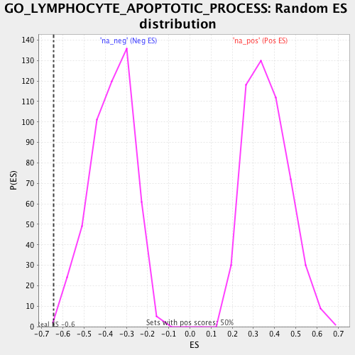

| | | Dataset | PBMC |
| Phenotype | NoPhenotypeAvailable |
| Upregulated in class | na_neg |
| GeneSet | GO_LYMPHOCYTE_APOPTOTIC_PROCESS |
| Enrichment Score (ES) | -0.64477557 |
| Normalized Enrichment Score (NES) | -1.7468711 |
| Nominal p-value | 0.002008032 |
| FDR q-value | 0.29611534 |
| FWER p-Value | 0.996 |
Table: GSEA Results Summary
 Fig 1: Enrichment plot: GO_LYMPHOCYTE_APOPTOTIC_PROCESS
Fig 1: Enrichment plot: GO_LYMPHOCYTE_APOPTOTIC_PROCESS
Profile of the Running ES Score & Positions of GeneSet Members on the Rank Ordered List
| PROBE | GENE SYMBOL | GENE_TITLE | RANK IN GENE LIST | RANK METRIC SCORE | RUNNING ES | CORE ENRICHMENT | | 1 | TNFRSF21 | | | 1094 | 0.777 | -0.0321 | No |
| 2 | BCL10 | | | 1883 | 0.535 | -0.0572 | No |
| 3 | DFFA | | | 2391 | 0.425 | -0.0668 | No |
| 4 | DNAJA3 | | | 3444 | 0.254 | -0.1373 | No |
| 5 | FAS | | | 4707 | 0.102 | -0.2382 | No |
| 6 | AKT1 | | | 6673 | -0.105 | -0.3997 | No |
| 7 | IL2RA | | | 6724 | -0.112 | -0.3950 | No |
| 8 | TRAF3IP2 | | | 9371 | -0.490 | -0.5844 | Yes |
| 9 | BCL2L11 | | | 9534 | -0.523 | -0.5563 | Yes |
| 10 | CLC | | | 10558 | -0.818 | -0.5789 | Yes |
| 11 | RPS6 | | | 10694 | -0.882 | -0.5196 | Yes |
| 12 | RIPK1 | | | 10806 | -0.941 | -0.4534 | Yes |
| 13 | BAK1 | | | 11093 | -1.118 | -0.3881 | Yes |
| 14 | SIVA1 | | | 11338 | -1.421 | -0.2948 | Yes |
| 15 | BAX | | | 11447 | -1.669 | -0.1698 | Yes |
| 16 | PKN1 | | | 11553 | -2.249 | 0.0022 | Yes |
Table: GSEA details [plain text format]

Fig 2: GO_LYMPHOCYTE_APOPTOTIC_PROCESS: Random ES distribution
Gene set null distribution of ES for GO_LYMPHOCYTE_APOPTOTIC_PROCESS